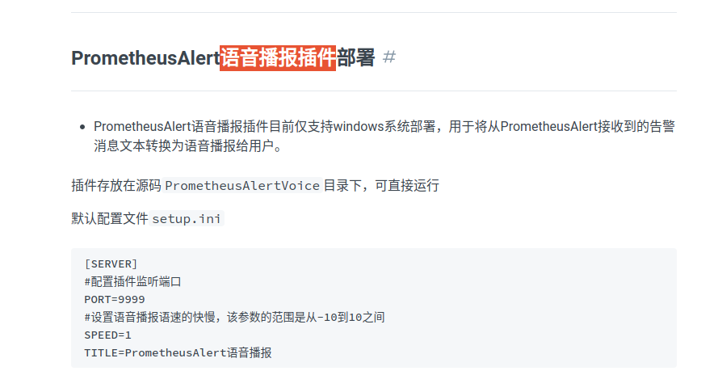

Alert & TTS
1 . poe suggest:
可以使用下面的做法来把Grafana的告警通知转换成语音然后播放:
- 安装并配置Grafana告警插件,这可以使用邮件、Slack等方式发送告警。
- 设置一个webhook接收Grafana的告警。这个webhook可以连接到自己实现的服务或公共服务。
- 自己实现一个webhook服务,用来接收Grafana的告警。在接收到告警通知后,使用语音合成API转换文本为语音。
- 调用公共的语音合成API,将告警通知文字转换为语音,然后播放。比如 Google Text-to-Speech API、Amazon Polly API等。
- 将生成的语音文件保存在临时文件夹中,通过 connected voice playing device 播放该语音文件。
- 你还可以使用语音助手技术,比如Alexa Skills或Google Assistant Actions,接收Grafana的告警,然后通过连接的语音播放设备说出告警内容。 主要关键是:
- 配置好Grafana告警插件和webhook
- 实现接收webhook的服务,调用语音合成API或者语音助手
- 通过连接的语音播放设备播放生成的语音文件 语音通知告警可以更快速有效地引起关注,提高你对重要监控指标的响应时间。
2 . 介绍链接
prometheus alert 语音播报

3 . 实践方案与测试过程配置文件
3.1 prometheus
global:
scrape_interval: 15s
evaluation_interval: 15s
alerting: # 连接alertmanager
alertmanagers:
- static_configs:
- targets: ["10.13.3.109:9093"]
rule_files:
- "/etc/prometheus/rules.yml" # 容器内绝对路径
# A scrape configuration containing exactly one endpoint to scrape:
# Here it's Prometheus itself.
scrape_configs:
scraped from this config.
- job_name: "prometheus"
static_configs:
- targets: ["localhost:9090"]
# labels:
# instance: prometheus
- job_name: "node_exporter"
static_configs:
- targets: ["10.13.3.109:9100"]
# labels:
# instance: 10.13.3.109
- targets: ["10.13.3.110:9100"]
# labels:
# instance: 10.13.3.110
3.2 alertmanager
global:
resolve_timeout: 5m
route: # 告警路由配置，定义如何处理和发送告警
receiver: webhook
group_wait: 30s
group_interval: 1m
repeat_interval: 4h
group_by: [alertname]
routes:
- receiver: webhook
group_wait: 10s
receivers: # 告警接收者配置，定义如何处理和发送告警
- name: webhook
webhook_configs:
- url: http://10.13.3.109:8060/dingtalk/webhook1/send #钉url是 IP:/固定路径
send_resolved: true # 是否发送已解决的告警。如果设置为 true，则在告警解决时发送通知
3.3 dingtalk config
targets:
webhook1:
url: https://oapi.dingtalk.com/robot/send?access_token=4e0772881cda6bc27e793cb9c17550f4496deb99c86786c951bc70a741324138
3.4 alert rules
groups:
- name: node-exporter
rules:
- alert: node-up
expr: up{job="node_exporter"} == 0
for: 15s
labels:
severity: critical
team: node
annotations:
summary: "{{ $labels.instance }} node down more than 15s！"
description: "{{ $labels.instance }} node down unexpectly, go check the server ！！！"
- alert: CPU Utilization
expr: 100 - (avg by (instance)(irate(node_cpu_seconds_total{mode="idle"}[1m]) )) * 100 > 80
for: 30s
labels:
user: prometheus
severity: warning
team: node
annotations:
description: "{{$labels.instance}} CPU Utilization larger than 80%！(current value: {{ $value }}%)"
- alert: Memutilization
expr: (node_memory_MemTotal_bytes - (node_memory_MemFree_bytes+node_memory_Buffers_bytes+node_memory_Cached_bytes )) / node_memory_MemTotal_bytes * 100 > 80
for: 1m
labels:
user: prometheus
severity: warning
team: node
annotations:
description: "{{$labels.instance}} Mem Utilization larger than 80%！(current value: {{ $value }}%)"
加入kube-state-metrics
存在执行失败的Job: kube_job_status_failed{job="kubernetes-service-endpoints",k8s_app="kube-state-metrics"}==1
集群节点状态错误: kube_node_status_condition{condition="Ready",status!="true"}==1
集群节点内存或磁盘资源短缺: kube_node_status_condition{condition=~"OutOfDisk|MemoryPressure|DiskPressure",status!="false"}==1
集群中存在非Bound状态的PVC： kube_persistentvolumeclaim_status_phase{phase=~"Lost|Pending"}==1
集群中存在启动失败的Pod：kube_pod_status_phase{phase=~"Failed|Unknown"}==1
最近30分钟内有Pod容器重启: changes(kube_pod_container_status_restarts[30m])>0
查看请求(目前活跃的告警) curl http://10.13.3.109:9093/api/v2/alerts?alert.state=active

### 4 . homeassistant
4.1 安装homeassistant
docker run -itd --name hoss --privileged --restart=unless-stopped -v ./config/:/config -p 8123:8123 ghcr.io/home-assistant/home-assistant
4.2 安装hacs, 进入容器并执行命令下载脚本,然后restart容器
wget -O - https://get.hacs.xyz | bash -
4.3 [配置hacs](https://hacs.xyz/docs/configuration/basic)
需要清除浏览器缓存
认证,详见链接中的图片和指引
4.4 容器配置文件集成[hass-xiaomi-miot](https://github.com/al-one/hass-xiaomi-miot),修改配置文件之后重启容器
shell_command: update_xiaomi_miot: |- wget -q -O - https://ghproxy.com/raw.githubusercontent.com/al-one/hass-xiaomi-miot/master/install.sh | HUB_DOMAIN=ghproxy.com/github.com ARCHIVE_TAG=latest bash -
4.5 Xiaomi Miot Auto: intelligent_speaker
开发者工具中调用服务,执行tts 播放或者执行命令
4.6 动态自动化post text to service
- id: '1690281875853'
alias: 新建自动化
description: ''
trigger:
- platform: webhook
allowed_methods:
- POST
- PUT local_only: true webhook_id: -zCkMdYsuwdFc4f3uiuijv9ip id: '01' condition: [] action:
- service: xiaomi_miot.intelligent_speaker data: entity_id: media_player.xiaomi_lx01_8682_play_control text: "" mode: single ```
- platform: webhook
allowed_methods:
note: webhook使用的借鉴
https://github.com/al-one/hass-xiaomi-miot/issues/907
5. alertmanager 配置
5.1 webhook 和 dingding webhook 配置相同
5.2 POST 结构参考
{
"version": "4",
"groupKey": "{}/{severity=~\"^critical$\"}:{alertname=\"node-up\"}",
"status": "firing",
"receiver": "default",
"groupLabels": {
"alertname": "node-up"
},
"commonLabels": {
"alertname": "node-up",
"instance": "example.com:9100",
"job": "node_exporter",
"severity": "critical",
"team": "node"
},
"commonAnnotations": {
"description": "{{ $labels.instance }} node down unexpectly, go check the server ！！！",
"summary": "{{ $labels.instance }} node down more than 15s！"
},
"externalURL": "http://example.com:9093",
"alerts": [
{
"status": "firing",
"labels": {
"alertname": "node-up",
"instance": "example.com:9100",
"job": "node_exporter",
"severity": "critical",
"team": "node"
},
"annotations": {
"description": "{{ $labels.instance }} node down unexpectly, go check the server ！！！",
"summary": "{{ $labels.instance }} node down more than 15s！"
},
"startsAt": "2021-08-01T10:00:00.000Z",
"endsAt": "0001-01-01T00:00:00Z",
"generatorURL": "http://example.com:9090/graph?g0.expr=up%7Bjob%3D%22node_exporter%22%7D+%3D%3D+0&g0.tab=1"
}
]
}